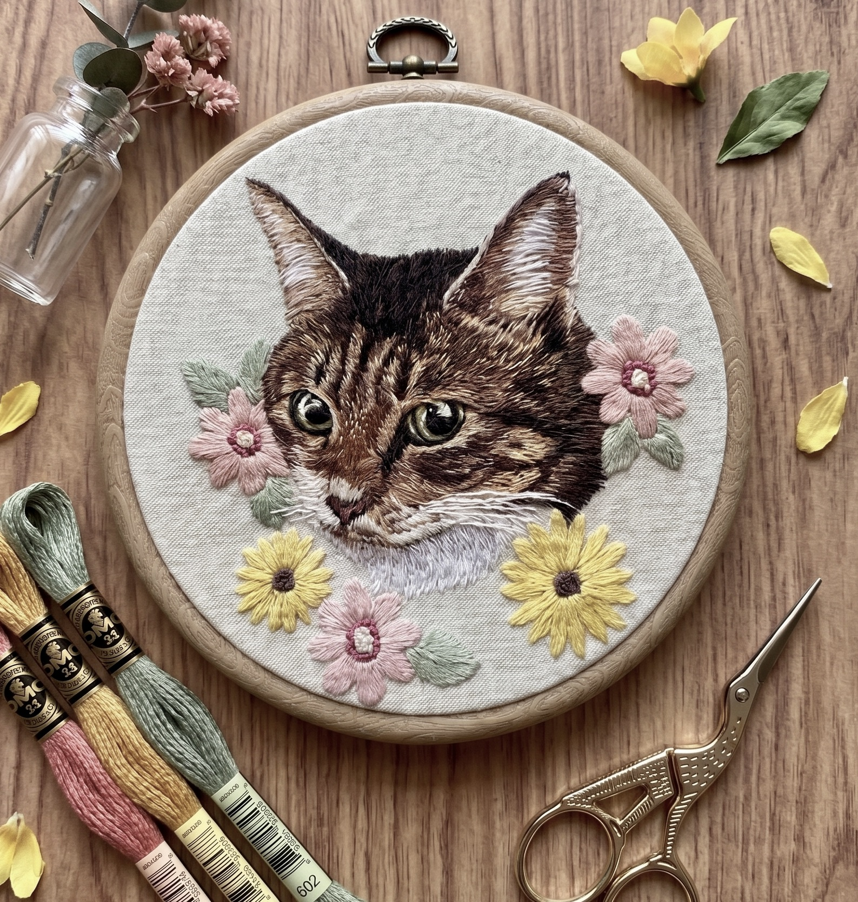
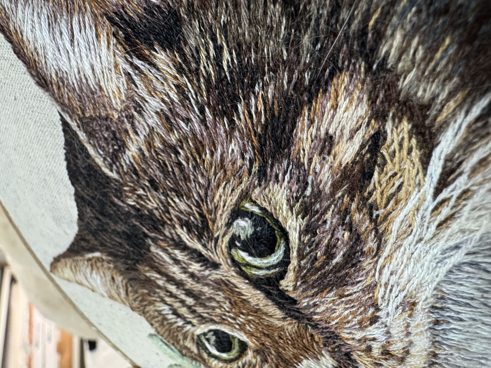
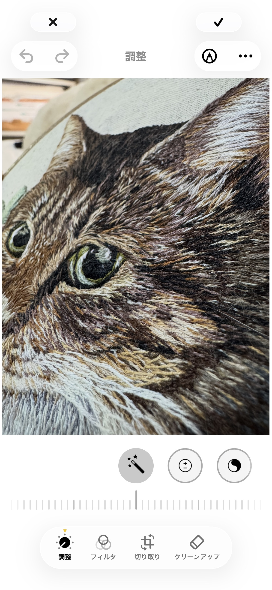

AI × 手刺繍クリエイターアカデミー
完成作品の
撮影方法
作品の魅力をSNSで伝えるための
撮影・編集の基本
1 / 9
撮影の準備
用意するもの
スマートフォン
普段お使いのものでOK。特別なカメラは必要ない。
三脚
動画撮影・手元撮影のときに使用。写真のみの場合は不要。テーブルに取り付けられるタイプが使いやすい。
背景素材
100均で十分。A3サイズの模造紙（白・生成り）、レンガや板の模様がついた背景紙など。
小物類（世界観を作る）
造花・ガラスの瓶・おしゃれな糸切りバサミ・DMCの糸など。写真映えするものを控えめに添える。
2 / 9
撮影の準備
光の選び方
おすすめの光
曇りの日の窓際
光が柔らかく拡散し、糸の光沢が均一に出る。最もおすすめ。
レースのカーテン越し
晴れの日でも直射日光を和らげ、柔らかい光が作れる。
避けたい光
直射日光
影が強くなり、毛並みの繊細な質感が潰れて見える。
室内の蛍光灯・電球
色温度がずれて糸の色が正確に写らない。
3 / 9
撮影の基本
スマホの設定
グリッド線をオン
水平・垂直を揃えて傾きのない写真に。
HDRをオン・フラッシュはオフ
HDRで白飛びや黒つぶれを防ぐ。フラッシュは自然光を活かすためオフにする。
ズームは使わない
デジタルズームは画質が落ちる。大きく写したいときは体ごと近づける。
ピントは瞳か鼻に・セルフタイマーを使う
画面をタップしてピントと露出を手動で合わせる。三脚使用時はセルフタイマーでブレを防ぐ。
5 / 10
撮影の基本 ①
フラットレイ（真上から）
三脚を高く設定して真上から撮る
額装した作品に向いており、Instagram正方形（1:1）に収まりがよい。
背景紙の上に作品を置き小物で世界観を作る
白・生成りの布や背景紙の上に置く。DMC糸・バサミ・造花・ガラス瓶を周りに添える。小物は控えめに。
窓際の自然光で撮る
柔らかい光で撮ると糸の色が正確に出る。

タップで拡大
5 / 9
撮影の基本 ②
斜め45度
作品を立てかけるか持って斜めから撮る
背景は白か生成りが基本。小物を斜め後ろに添えると奥行きが出る。
サイドライトと組み合わせると効果的
窓を横に置いて斜めから光を当てると毛並みの立体感が最大になる。
刺繍の質感が最も伝わる構図
糸の凹凸や毛並みのリアルな立体感が伝わり、作品の魅力を最大限に引き出せる。

タップで拡大
6 / 9
撮影の基本 ③
壁に飾って撮影
実際に飾った状態を正面から撮る
「家に飾ったときのイメージ」が伝わりやすく、受注につながりやすい。
周りに小物や植物を添えてもよい
ドライフラワーやフェイクグリーンを壁に添えると、インテリアとしての魅力が伝わる。
「このお部屋に飾りたい」と思わせる写真を目指す
生活空間に馴染む雰囲気を演出することでお客様の購買イメージにつながる。
7 / 9
仕上げ
iPhone純正アプリで編集する
調整する項目
露光量・コントラスト・色温度・シャープネス・彩度。写真アプリの「調整」タブで全て調整できる。
やりすぎない
加工しすぎると実物と見た目が変わり、「思ったのと違う」と感じさせてしまう。自然な仕上がりを心がける。
慣れてきたら Lightroom Mobile・Snapseed なども試してみましょう。

iPhone純正アプリの編集画面
8 / 9
仕上げ
SNS投稿時のサイズ比率
| 比率 | 用途・特徴 |
|---|---|
| 1 : 1 | フィード（正方形）。どんな構図もまとまって見える。 |
| 4 : 5 | フィード（縦長）。画面占有率が高くスクロールが止まりやすい。おすすめ |
| 9 : 16 | ストーリーズ・リール。縦いっぱいに広がる迫力のある見せ方。 |
9 / 9
1 / 9